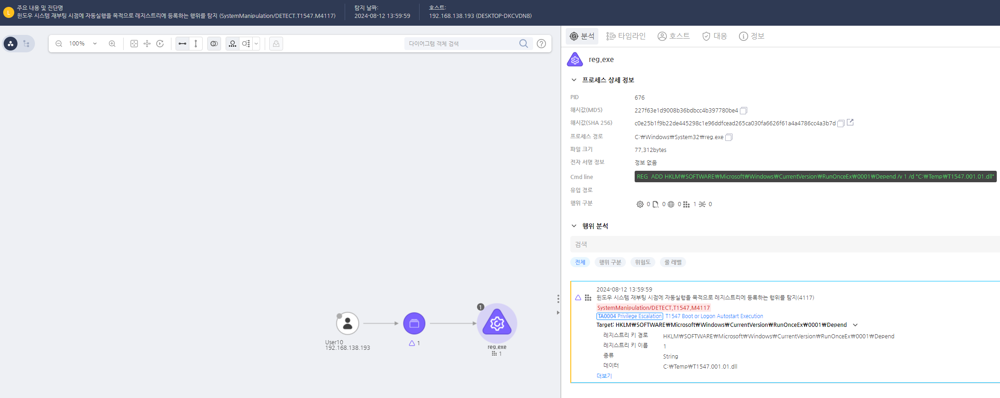

T1547.001.01 부팅/로그온시 자동 실행, 레지스트리 키/시작 폴더
D3FEND
MITRE ATT&CK 액션을 기준으로 대응 방안을 작성
Detection
HKLM\SOFTWARE\Microsoft\Windows\CurrentVersion\RunOnceEx
HKLM\SOFTWARE\Wow6432Node\Microsoft\Windows\CurrentVersion\RunOnceEx 레지스트리에 등록되는 행위를 탐지한다.
Detection(EDR)

Response
공격자가 생성한 레지스트리 키를 삭제합니다.
Mitigations
레지스트리 모니터링 및 변경 알림 (M1033 - Process Monitoring)
- 레지스트리 Run 키와 스타트업 폴더의 변경 사항을 실시간으로 모니터링하고 알림 시스템을 설정하여 악성 코드의 등록을 탐지
- 레지스트리 변경 감지 도구를 사용하여 의심스러운 레지스트리 키(예:
HKEY_CURRENT_USER\Software\Microsoft\Windows\CurrentVersion\Run)의 변화를 모니터링
- 레지스트리 변경 로그를 분석하여 불필요하거나 의심스러운 항목을 추적
스타트업 폴더 및 레지스트리 항목 보호 (M1040 - Security Configurations)
- 스타트업 폴더 및 레지스트리 키에 대한 권한을 제한하여 일반 사용자가 이를 수정할 수 없도록 설정
- 레지스트리 권한 설정을 통해 악성 코드가 스타트업 항목에 삽입될 수 없도록 보호
- 불필요한 자동 시작 항목을 제거하고, 정상적인 프로그램만이 자동으로 실행되도록 관리
보안 소프트웨어 및 EDR 솔루션 사용 (M1047 - System Logging & Monitoring)
- EDR/XDR 솔루션을 사용하여 자동 시작 프로그램을 실시간으로 모니터링하고, 이상 활동을 탐지
- 실행 중인 프로세스 및 시작 항목을 검사하여 의심스러운 프로그램이 자동 실행되는 것을 차단
- Antivirus 및 Anti-malware 소프트웨어를 사용하여 스타트업 폴더와 레지스트리 항목을 주기적으로 검사
로그인 스크립트 및 자동 실행 방지 (M1028 - Application Layer Filtering)
- 로그인 스크립트나 자동 실행 기능을 제한하여 악성 코드가 로그온 시 자동으로 실행되는 것을 방지
- 그룹 정책을 활용하여 자동 실행 기능을 비활성화하거나 특정 디렉토리에서만 실행될 수 있도록 제한
- USB 장치의 자동 실행 및 네트워크 드라이브의 자동 실행을 차단하여 외부 매체를 통한 악성 코드의 실행을 방지
시스템 보안 패치 및 업데이트 적용 (M1042 - Disable or Remove Feature or Program)
- Windows 보안 패치를 정기적으로 적용하여 자동 실행 관련 취약점을 해결
- 자동 실행 기능을 최소화하여 시스템에서 불필요한 자동 실행 프로세스를 비활성화
- 보안 소프트웨어와 함께 시스템 보호 설정을 강화하여 악성 코드가 스타트업 항목을 통해 실행되지 않도록 방지
Affected Techniques
Action 실행시 함꼐 영향을 받는 다른 Techniqes
| D3FEND |
| D3-FIM File Integrity Monitoring |
| D3-SICA System Init Config Analysis |
| D3-FA File Analysis |